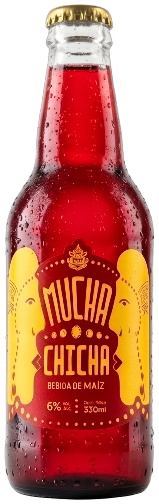
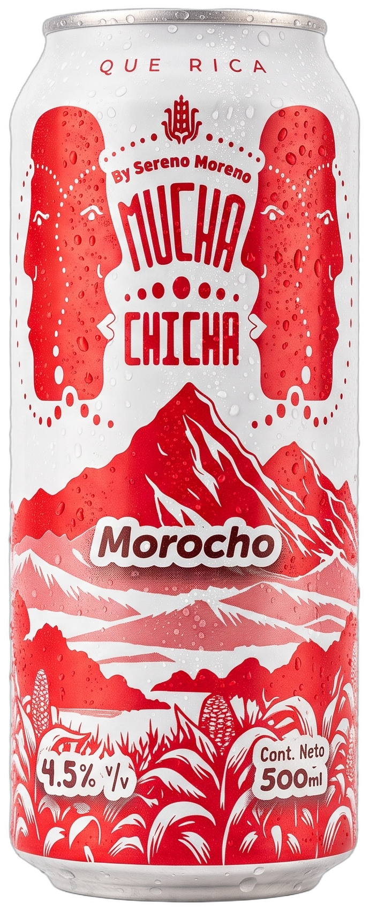

SM-184
Mesa 04hace 07 min
2

Mucha Chicha Maíz Rojo
Botella 330 ml · Enfriador central
1

Chicha de Morocho
Lata 500 ml · Canela andina · Sin hielo
Instrucción: Entregar junto con entradas calientes de cocina.